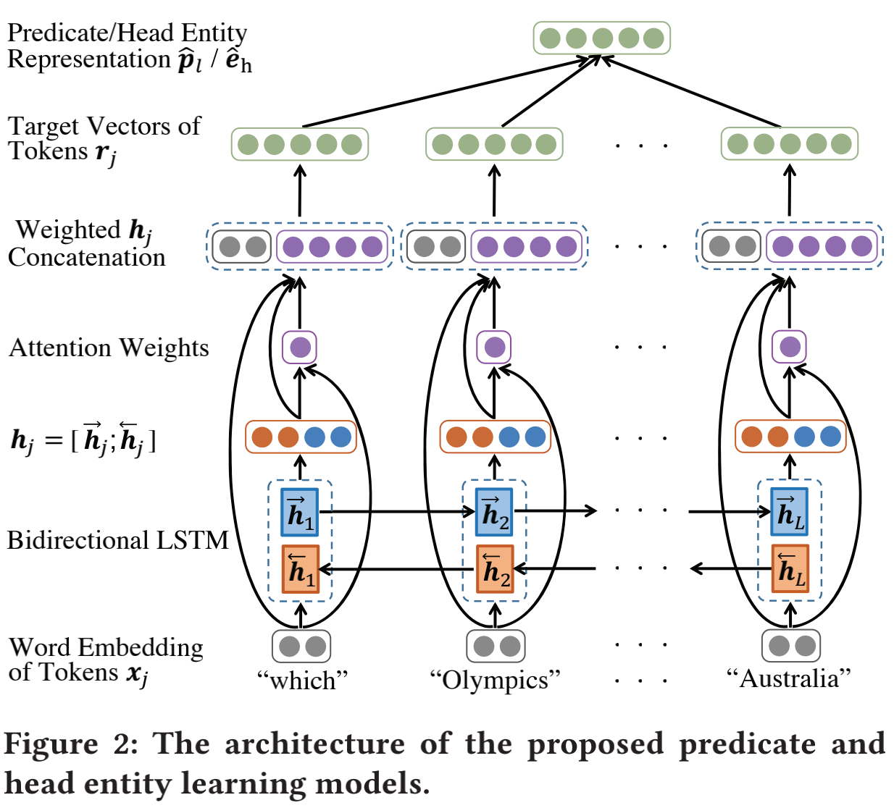

百度团队发表在WSDM19年的文章，源码，备用地址。通过谓词划分数据集，使得训练集合测试集之间没有关联，用以验证模型泛化能力。分别验证每部分损失函数的作用。实体数量较多，直接用预测的实体去匹配复杂度高，通过识别实体名称，缩小候选实体范围。KG embedding将知识图谱表示成低维向量，使得在学习的向量中知识图谱原有的结构和关系得到保留。
1. 思想

- 输入
知识图谱$G$，带有答案、谓词标注、(谓词对应embedding向量)、实体标注、头实体标注、(头实体对应embedding向量) 的问题集$Q$ - 输出
联合损失最小的候选答案。
1.1 Knowledge Graph Embedding
$P$ 表示predicates的 embedding，$E$ 表示 entities的 embedding，$P$和$E$作为后续子任务的基础设施。文章使用现有KG embedding算法学习$P$和$E$。
对于知识图谱$G$中的每个事实$(h,l,t)$，对应的embedding表示为$(e_h, P_l, e_t)$，embedding算法将$e_h, P_l, e_t$随机初始化或者基于训练好的词向量(可用预训练模型?)初始化，函数$f(.)$定义事实在embedding中的关系$e_t \approx f(e_h, P_l)$，比如:
$$TransE: e_t \approx e_h + P_l$$ $$TransR: e_t M_l \approx e_h M_l + P_l $$ $M_l$是predicates
$l$的变换矩阵。最后，算法最小化知识图谱$G$中所有事实的$e_t$和$f(e_h,P_l)$的距离。
1.2 Predicate and Head Entity Learning Model
输入一个简单问句，找到在predicates embedding空间中的点，作为 predicates的表示$\hat{P}_l$，在entities embedding空间中的点，作为 entities的表示$\hat{e}_h$。能够被$G$回答的所有问题的predicates向量表示都应该在predicates embedding中，因此模型输入简单问题，返回predicates embedding中离$P_l$(标注)最近的向量$\hat{P}_l$(预测).
Word Embedding
问题长度L，基于预训练模型Glove将问题的L个token映射为词嵌入向量序列$\{x_j\}, j=1,…L$。BiLSTM捕获词的不同重要性和顺序信息
学习前向隐藏状态序列$(\overrightarrow{h}_1, \overrightarrow{h}_2, …, \overrightarrow{h}_L)$和后向隐藏状态序列$(\overleftarrow{h}_1, \overleftarrow{h}_2, …, \overleftarrow{h}_L)$，比如 $\{\overleftarrow{h}_j\}$通过如下公式计算：$$ForgetGate: f_j=\sigma(W_{xf}x_j+W_{hf}\overleftarrow{h}_{j+1}+b_f)$$
$$InputGate: i_j=\sigma(W_{xj}x_j+W_{hi}\overleftarrow{h}_{j+1}+b_i)$$
$$OutputGate: o_j=\sigma(W_{xo}x_j+W_{ho}\overleftarrow{h}_{j+1}+b_o)$$
$$CellState: c_j=f_j \circ c_{j+1}+i_j\tanh(W_{xc}x_j+W_{hc}\overleftarrow{h}_{j+1}+b_c)$$
$$\overleftarrow{h}_j=o_j \circ \tanh(c_j)$$
连接前向后向隐藏状态向量$h_j=[\overrightarrow{h}_j; \overleftarrow{h}_j]$
Attention
通过$h_j$和$x_j$计算attention权重$\alpha_j$：$$q_j = \tanh(w^\top[x_j; h_j])+b_q$$ $$\alpha_j=\frac{exp(q_j)}{\sum_{i=j}^L exp(q_i)}$$
中间层
将attention权重应用到$h_j$，并与$x_j$连接得到新的隐藏状态$s_j=[x_j;\alpha_j h_j]$全连接层
在$s_j$上增加全连接层得到$r_j \epsilon R^{d \times 1}$就是第j个token的目标向量。预测
predicate$\hat{P}_{l}$$$= \frac{1}{L} \sum_{j=1}^L r_j^\top$$
损失函数: $||P_l-\frac{1}{L}\sum_{j=1}^\top||_2$ 和 $||e_h-\frac{1}{L}\sum_{j=1}^\top||_2$
$\hat{e}_h$同样通过上述模型进行预测，得到的$\hat{e}_h$主要用于处理歧义问题。因为直接使用它与$E$中所有entity比较太耗时。使用下面的探测模型降低候选head entity的数量。
1.3 Head Entity Detection Model
 训练数据为问题$Q$和对应的实体名称标注。
下层的`BiLSTEM`与前面一致，通过全连接层后接入`SoftMax`得到的结果$v_j \epsilon R^{2 \times 1}$ ，$v_j$的两个值分别表示`token j`是实体名称的概率和不是实体名称的概率。
训练数据为问题$Q$和对应的实体名称标注。
下层的`BiLSTEM`与前面一致，通过全连接层后接入`SoftMax`得到的结果$v_j \epsilon R^{2 \times 1}$ ，$v_j$的两个值分别表示`token j`是实体名称的概率和不是实体名称的概率。
需要注意，候选实体可能只是真正实体的一部分，因此包含这些实体名称的都作为候选head entity，head entity属于候选head entity的三元组是候选三元组$C$，这就缩小了直接用$\hat{e}_h$去比较的复杂度。
1.4 Join Search On Embedding Spaces
前面的步骤能够得到一个问题的predicate和head entity的表示 $\hat{p}_l$和$\hat{e}_h$，以及候选的head entity。还需要从$G$中找出最符合$\hat{p}_l$和$\hat{e}_h$的三元组，也就是从候选三元组$C$中寻找。通过如下公式表示一个候选三元组$(h,l,t)$与$(\hat{p}_l, \hat{e}_h)$的距离：
$$||p_l-\hat{p}_l||_2+\beta_1||e_h-\hat{e}_h||_2+\beta_2||f(e_h, P_l)-\hat{e}_t||_2$$
$$-\beta_3sim[n(h),HED_{entity}]-\beta_4sim[n(l),HED_{non}]$$
前半段表示三元组和预测结果在embedding空间的距离，这里使用$f(e_h, P_l)$表示$e_t$，因为$G$中可能存在$e_h, P_l$相同，但是$e_t$不同的情况。另外$\hat{e}_t$也是通过$f(.)$计算得到的。
第二段表示，我们倾向于选择head与$HED_{entity}$一致，predicate被问题提及的三元组。
2. 实验
2.1 数据
FB2M和FB5M是FreeBase的两个子集。
2.2 3组实验
- 在
FB2M的accuracy和FB5M(指标未说明)
证明了准确率有所提高，并且证明本文所述方法在有embedding时效果更好。 - 三种不同
embedding算法以及没有embedding对比
证明了embedding的提升，另外按照谓词划分数据集，这种数据划分下训练集和测试集没有直接关系，证明了有embedding的方法具有泛化能力。这种数据划分方式值得学习。 - 联合搜索损失函数的每个部分
通过只保留、移除、累加三种方式处理损失函数的每个部分，证明每个部分的作用。谓词之间的距离贡献最大(第一个部分)；谓词和头实体加在一起提升较大，而且可以做联合学习；最后一个部分提升1.1，可能因为有些问题和对应谓词有相同的词语。
0. 个人感悟
实习回来，浮躁了一段时间，是时候静下心来准备毕业论文了，非常惭愧，读研两年了，静下心看论文的情况并不多。在《极客时间》的《卖桃者说》听到一个观点，有输出的学习才会更加有效，认真输出的内容会得到反馈，反馈能够促使自己更加热爱学习。所谓的正向循环就是如此，不过就是利用邪恶的多巴胺。自己在这方面确实有所欠缺，半年前听到实验室大佬谈论正向循环，自己也尝试调整自己，寻找自己的正向循环，但疲于奔命，不了了之。重新整理了一下博客，支持公式输入，望借此构成自己阅读论文的正向循环，重新起航。
若你觉得我的文章对你有帮助，欢迎点击上方按钮对我打赏
扫描二维码，分享此文章